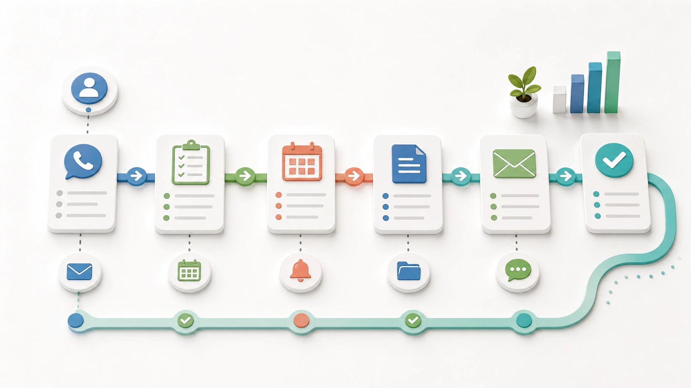

他社の改善事例 / BtoB営業・追客
失注理由を、商談後すぐ次の接点に変える
商談直後に残る失注理由、先方の懸念、次に連絡できる時期を整理し、営業担当がフォロー内容を見直せるようにします。商談メモ、過去メール、CRM履歴をAIに渡し、失注理由・未回答の宿題・次回接点候補を見直せる表にします。営業担当は関係維持、提案方針、価格や条件に触れる表現、送信可否を判断します。
先に結論
失注直後のメモに、次に連絡する時期と理由まで残します。
商談が見送りになった直後ほど、相手が話した迷い、未回収の宿題、次に触れてよい時期を忘れないうちに残す必要があります。
「予算が合わない」「時期が早い」「決裁者の合意がない」など、見送りの理由をCRMへ残します。次に連絡したい時期と話題も記録すれば、数か月後も前回の続きから話せます。
仕事の変化
商談後に散らばるメモを、見直せる順番へ一覧にします。
現場で起きていたこと
商談直後、営業担当は手帳の走り書き、先方メール、CRMの履歴を開き、なぜ今回は見送りになったのかを拾い直していました。次の案件へ動きながらも、次回聞く条件や約束した資料を漏らしていないか不安が残ります。
変えたこと
AIはフォロー文だけでなく、CRMへ残す短い要約、次回確認したい質問、慎重に扱う表現の候補も切り分けます。営業担当は、相手との関係性、価格や条件、今連絡する妥当性を確認してから使います。
改善後に残るもの
商談1件ごとに、入力・転記・記憶の掘り起こしに使っていた15〜30分を、内容の見直しと次の提案に充てやすくなります。件数が多い営業日ほど、後日の聞き直しやフォロー漏れを減らしやすくなります。
改善後の実感
失注後フォローは、メモ探しではなく、次回連絡の時期と内容を決めるところから始まります。
理由が散らばる
失注理由、先方の懸念、次回連絡日、送るべき資料が、手帳、メール、CRMに分かれていました。
次回接点が残る
フォロー文下書き、CRM更新メモ、次回接点候補、確認が必要な表現がそろい、営業担当は確認と修正から始められます。
再接点を作りやすい
次に連絡できる理由がCRMに残るため、数か月後の再接点でも話の続きを始めやすくなります。
失注後フォロー
見送り理由を、次の接点とCRM更新メモへ残す。
営業担当は、「今期は予算が合わない」「決裁者へ上げる材料が足りない」と言われた商談メモを手帳に残したまま、次の電話に入りました。
机に戻るころには、前回メール、提案資料、CRMの案件メモ、上司に相談したい一言が別々の場所に散っています。
以前は週末に手帳とCRMを見返し、どの案件へいつ再連絡するか、なぜ見送りになったかを思い出すところから始めていました。
改善後は、手帳の写真、商談後に吹き込んだ30秒の音声メモ、前回までのメール、CRMの案件メモ、送った提案資料をAIへ渡します。
AIは失注理由を予算、時期、決裁者、競合、社内稟議、優先度の低さに分け、次に確認したい質問、送る資料候補、連絡候補日、CRM更新メモを一覧化します。
営業担当は、相手との関係性、価格や条件に触れる表現、今は連絡しない判断、送信前の文面を確認します。失注理由を分類して残せば、週末は記憶をたどる代わりに、次の提案資料を直したり上司への相談事項をまとめたりできます。
改善のイメージ
見送りの理由と次回連絡日を残し、フォロー漏れを防ぎます。
失注理由を分ける
予算、時期、決裁者、競合比較を分け、次回連絡の理由まで残します。
商談直後の材料を渡す
手帳、音声メモ、前回メールをまとめて、CRM更新とフォロー候補へつなげます。

次の提案改善に活かす
失注を終点にせず、次回提案、初回ヒアリング、見積条件の改善材料にします。
導入前
導入前は、失注理由をCRMに残す前に、メモとメールを探し直していました。
メール、手帳、CRM、提案書、社内チャットを営業担当が行き来していました。
読む、探す、転記する仕事ほど、次の商談準備や顧客対応に集中したい時間へ割り込んでいました。
失注理由や次回接点が残らないため、後日「この案件はなぜ止まったのか」を上長や本人に聞き直していました。
仕事の流れ
商談直後のメモから、CRM記録と次回のフォロー案を作ります。
商談メモ、音声メモ、過去メール、CRM履歴、提案資料を用意します。
予算、導入時期、決裁者の意向、競合との比較など、商談で聞いた理由をCRMへ記録します。
フォロー文、CRM更新メモ、慎重に扱う表現の候補まで切り分けます。AIは外部送信しません。
営業担当が相手との関係や提示した条件を踏まえ、連絡する時期と送る文面を決めます。
人とAIの分担
CRM記録とメール案はAIで作り、連絡の時期と言葉は営業担当が決める
AIで先に進める作業
- 失注理由の整理
- 次回接点の候補
- フォロー文下書き
- CRM更新メモと次回質問案
人が決めること
- 関係維持の判断
- 提案方針
- 価格や条件の判断
- 今は連絡しない判断と送信前確認